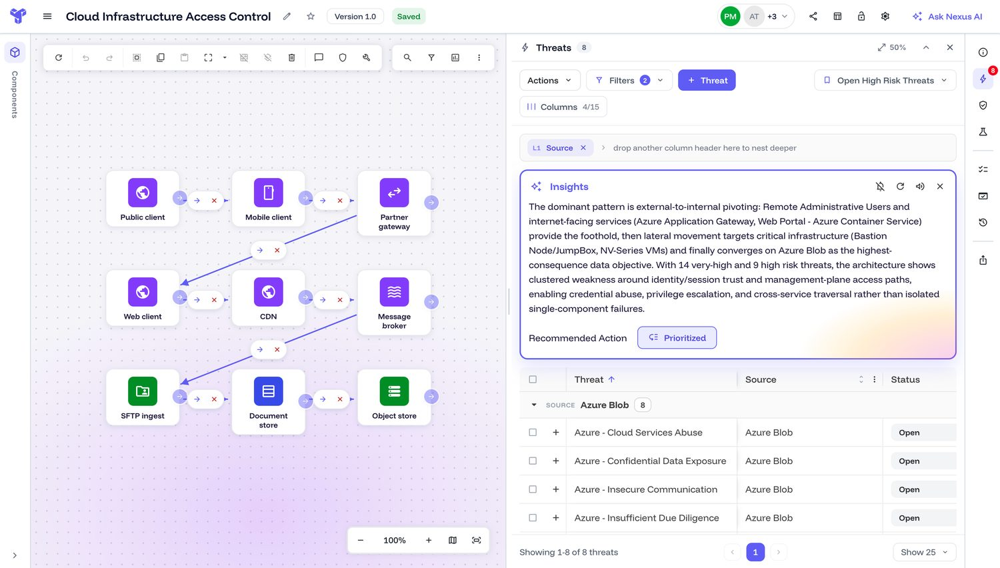

Selected work
An AI-native Home for a security platform
Reworked a passive list of threat models into one intent-driven surface — say what you need, the AI responds, and the expert decides.
24h → 2hto a first model
4 rolesone surface
Human-ledAI proposes, you decide

Insights — a security posture, read for you
An AI panel that reads a whole threat model and hands back a plain-language posture and one priority, instead of scrolling hundreds of threats.
64%org adoption
34%repeat use
~4×weekly growth

A pay-affecting workflow, correct by design
Reframed a workforce-management flow around correctness and decisions — the control surface four roles now work from.
4 rolesone control surface
Correctby design
Zerosilent pay errors

Engagement a 25,000-person company could see
Made taking part findable and one-tap, with accessibility built in — so participation became a signal HR could act on.
25K+employees
1-tapparticipation
WCAGaccessible